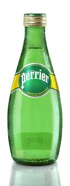

Perrier

Perrier (/ˈpɛrieɪ/ PERR-ee-ay, also US: /ˌpɛriˈeɪ/ -AY, French: [pɛʁje]) is a French brand of natural bottled mineral water captured at the source in Vergèze, located in the Gard département. Perrier is best known for its naturally occurring carbonation, distinctive green bottle, and higher levels of carbonation than its peers. Perrier was part of the Perrier Vittel Group SA, which became Nestlé Waters France after the acquisition of the company by Nestlé in 1992.[1] Nestlé Waters France also includes Vittel, S.Pellegrino and Contrex.
Distribution
As of January 2013, Perrier was available in 140 countries, and almost 1 billion bottles are sold every year.